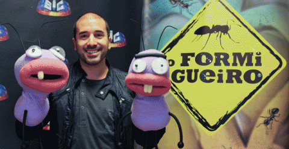
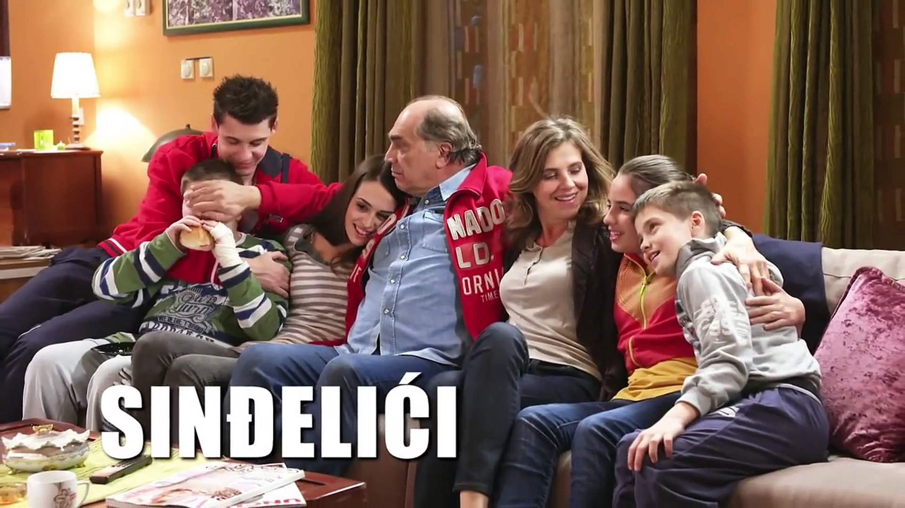

7 de enero de 2021
En los últimos diez años, España se ha consolidado como uno de los países que exporta más productos audiovisuales. Tanto es así que el primer informe mundial sobre formatos de ficción, el llamado ‘The Wit Guide to Scripted Formats’ que se realizó en 2014, coloca a la industria española entre los cinco países proveedores de formatos de ficción más importantes del mundo.
Este hecho no solo responde a que las ficciones españolas traspasen nuestras fronteras doblándose —o subtitulándose— en diferentes idiomas hasta convertirse en fenómenos televisivos en esos países, como fueron los casos de Un paso adelante (2002-2005) en Francia, Los Serrano (2003-2008) en Serbia, Sin identidad (2014-2015) en Italia o a nivel mundial como fue el caso de La casa de papel (2017-). Sino también que muchos de estos formatos y ficciones se adapten en esos países, ya sea siendo un auténtico calco del original o un producto bastante remozado con características y particularidades locales.
De esta manera, desde que en los años ochenta esa genialidad creada por Chicho Ibáñez Serrador llamada Un, dos, tres (1972-1988, 1991-1994 y 2004) se adaptara para el mercado británico, alemán o neerlandés, más de 45 formatos y ficciones originales españoles se han adaptado en multitud de países y cadenas televisivas. Se lleva la palma Tu cara me suena (2011-), que ha sido adaptado en 44 países distintos, siendo el único formato español que ha conquistado la lejana Asia oriental con adaptaciones en Mongolia, China, Corea del Sur, Vietnam o Filipinas.
De todos los países que han adaptado formatos televisivos españoles, Portugal es el líder destacado. El país vecino ha llegado adaptar hasta 19 programas y series, siendo El ministerio del tiempo (2015-) la última en pasar por la óptica lusa que llegó a la RTP pública con una temporada que duró de enero de 2017 a junio de ese mismo año. El siguiente en el ranking es Italia con 17 formatos adaptados, con la particularidad de que la adaptación de Médico de familia (1995-1999) fue todo un éxito sin precedentes ya que,desde que Rai 1 emitiera su Medico in famiglia en 1998, estuvo liderando las audiencias hasta 2006, llegando a sumar un total de diez temporadas.
Completa el podio de los ‘grandes amantes’ de los formatos españoles Chile, con 15 adaptaciones. El país andino ha adaptado tanto series como programas de entretenimiento, siendo estos últimos los que más aceptación ha tenido con la excepción de su versión de El Hormiguero (2006-), que constituyó un sonado fracaso.
Fuera de esta terna, pero no muy lejos, se encuentra México con 13 formatos españoles adaptados. La relación entre España y el país norteamericano es de intercambio fluido, pues no en vano, en la televisión española han triunfado productos mexicanos como El Chavo del 8 (1971-1980) o telenovelas como Corazón salvaje (1993-1994), Agujetas de color de rosa (1994-1995) o Soy tu dueña (2010), entre otras. Sin embargo, solo una ficción original azteca se adaptó bajo el prisma español, la telenovela Cuna de lobos (1986-1987) que TVE transformó en La verdad de Laura (2002).
Y así se podría continuar con un listado que no tiene visos de quedarse tal como está, pues en Corea del Sur preparan una adaptación de La casa de papel de la mano de Netflix y, hace unas semanas, saltaba la noticia de que el concurso Adivina qué hago está noche de Cuatro será adaptado en este 2021 que acaba de comenzar con el nombre de Game of talents tanto en Reino Unido (ITV) como en Estados Unidos (Fox).
Listado de las producciones en algunos países:
Alemania
Francia
Italia
Portugal
Reino Unido